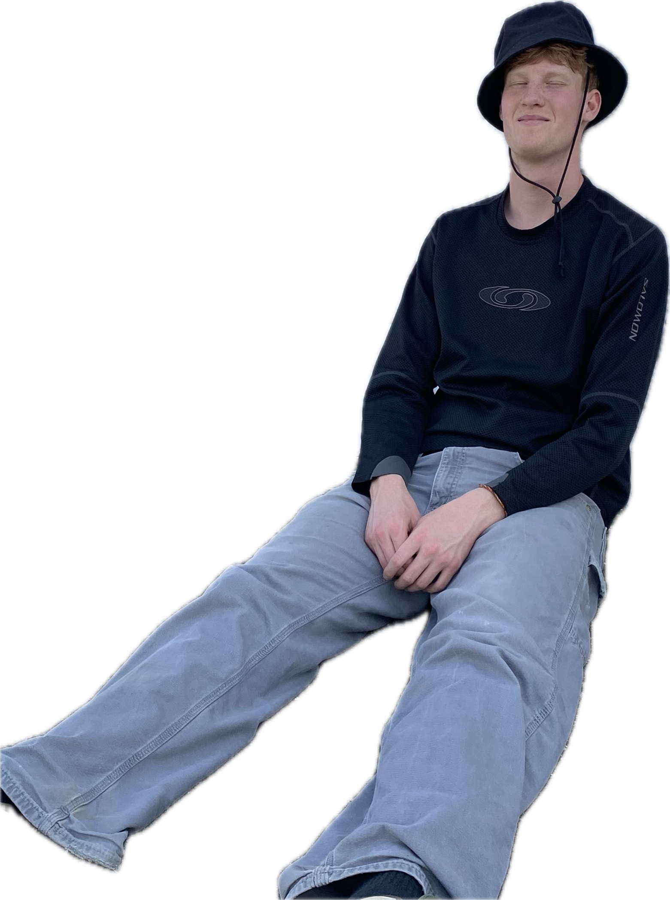

Mit navn er Markus, og jeg studerer Multimediedesign på KEA på 1. semester. Da jeg hørte om Multimediedesign for første gang, troede jeg studiet var langt mere grafisk design relateret. Til min overraskelse var kodning og hjemmesider en stor del af hvad jeg skulle beskæftige mig med. Hvilket jeg har nydt at lære!
Om mig

Jeg har en stor passion for at skabe film og grafisk design. Jeg drømmer om at få mine visuelle kreativitet og abstrakte designs ud på albumcovers, musikvideoer og tøj.